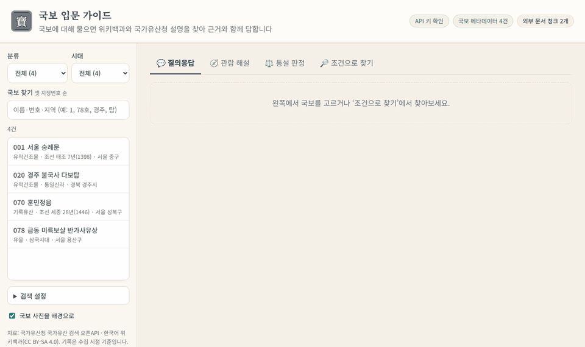

Problem
Collect official heritage documents and Wikipedia, index them in ChromaDB, and validate citation numbers in code.
My role
Individual project, collection through UI
Collect official heritage documents and Wikipedia, index them in ChromaDB, and validate citation numbers in code.
KEY55 offline tests

Collect official heritage documents and Wikipedia, index them in ChromaDB, and validate citation numbers in code.
Individual project, collection through UI
Offline tests with fake LLMs and API substitutes
Validates citation and error-handling rules. Real-model answer quality requires a separate evaluation. Published default evaluation uses a fake LLM.
Evidence ↗Real-model evaluation procedure and reports
What I chose, and what I gave up for it
What I would change, and what is still open